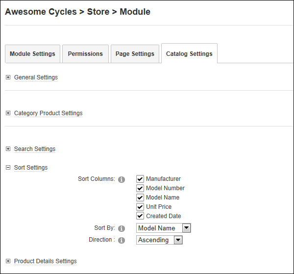

- At Sort Columns,
- At Sort By, select the default field that products are sorted by.
- At Direction, select the default direction, Ascending or descending that products are displayed in.
How to manage the way product sorting is managed in the Store Catalog module.
Prerequisite. The "Show Category Products" field must be checked in the General Settings section to configure these settings.
